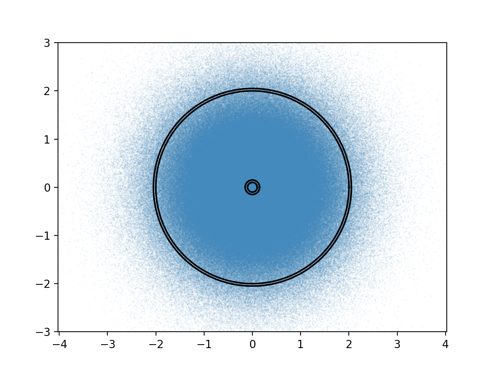

Forrige side🙂 🙁p⃗-rommet

I figuren ser du Maxwell Boltzmann fordelingen i 2 dimensjoner. Gaussisk i begge komponenter med topp i origo! Du ser også to skall. Det innerste skallet er i en radius p1 fra sentrum, for en bevegelsesmengde p1 som er liten. Siden den er liten er det høy sannsynlighet for å ha denne bevegelsesmengden ifølge Maxwell Boltzmann, og vi ser at det er veldig tett med partikler der. Det ytterste skallet viser partikler med bevegelsesmengde p2. Her er det ikke så mange partikler siden vi er langt vekk fra origo. Men innser du at det kanskje kan være minst like mange og kanskje flere partikler innenfor dette skallet? Rett og slett fordi området som skallet omfatter er større og får da med flere partikler selv om det er mindre tetthet av partikler her?
Nettopp derfor har n(p) en topp som er et stykke ut fra origo, mens fordelingen i hver av de 3 dimensjonene har topp i origo. Hang du med? I de neste par sidene går vi litt utenfor pensum for de som er litt ekstra interessert. Neste side